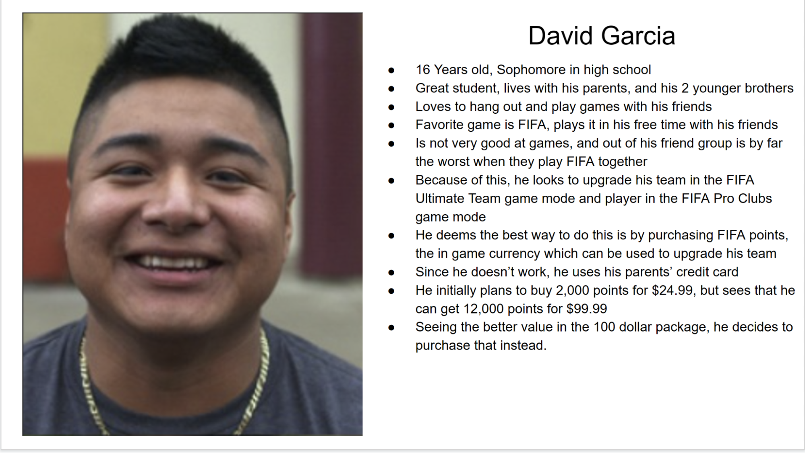
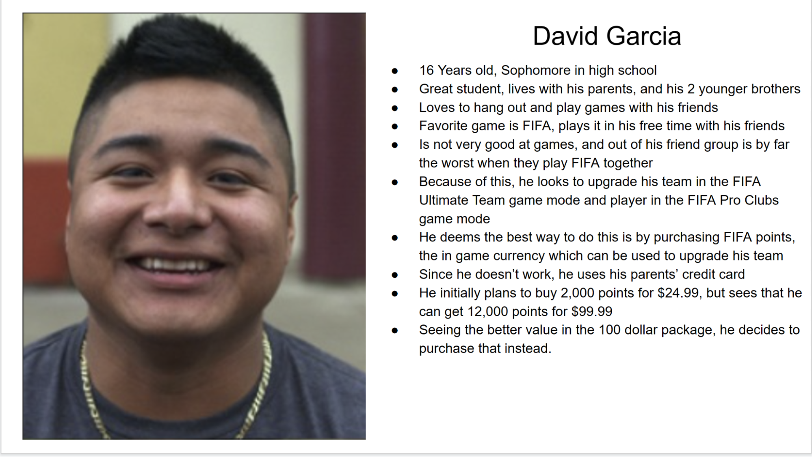
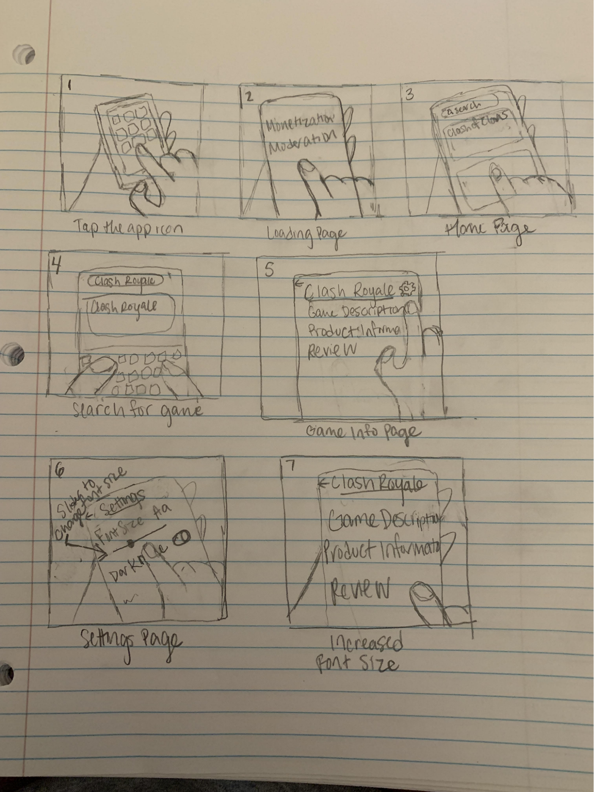
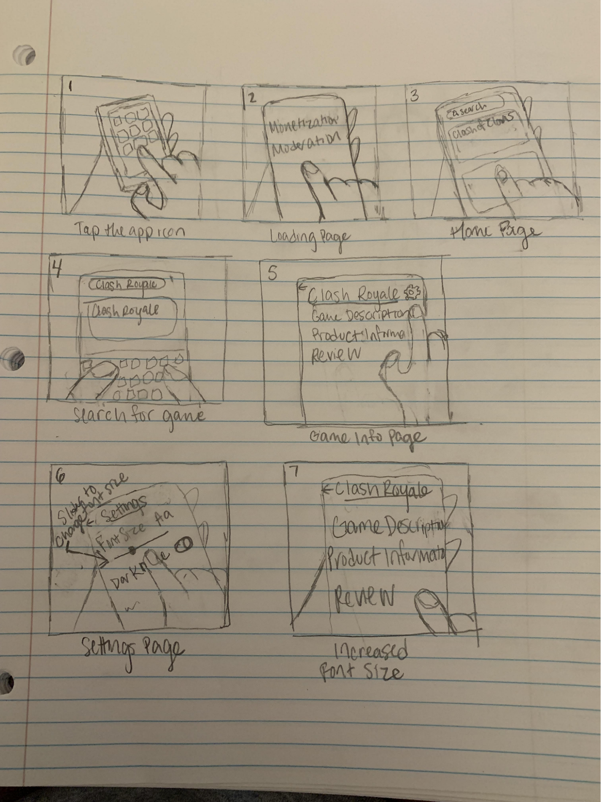
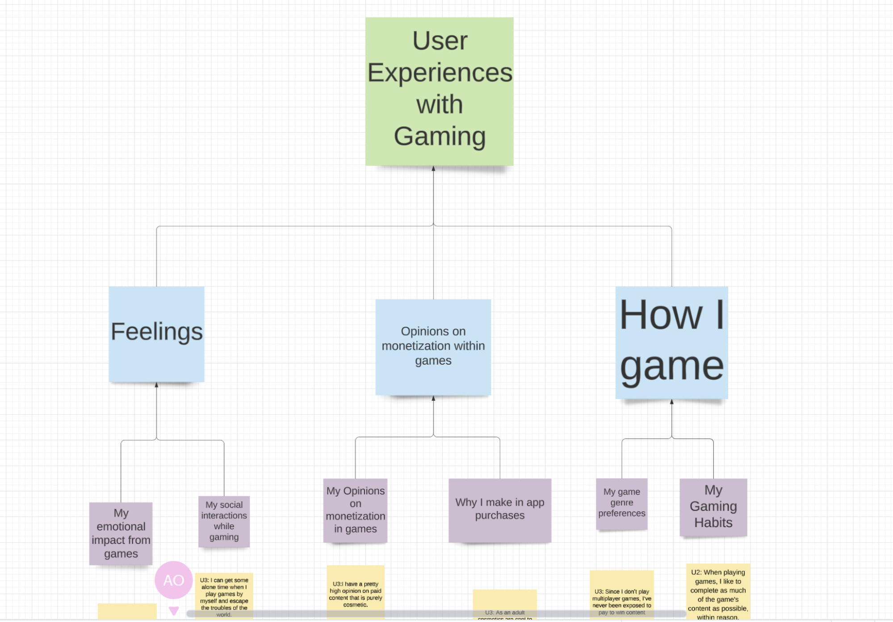
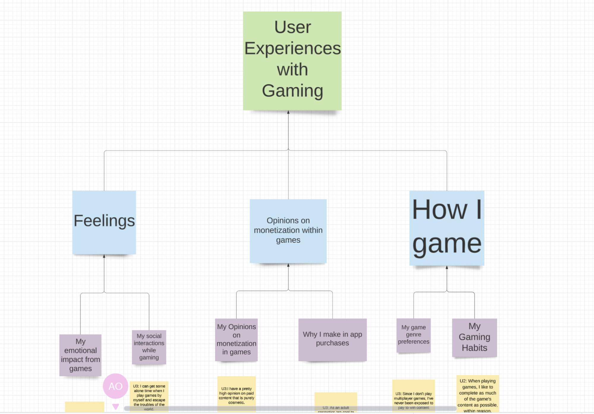
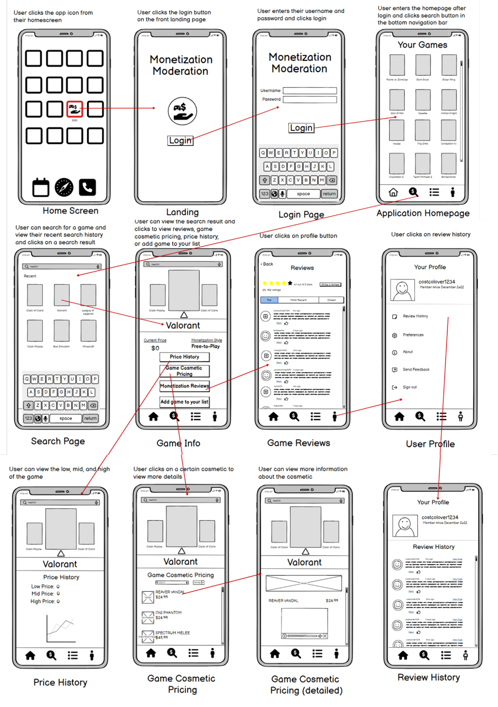
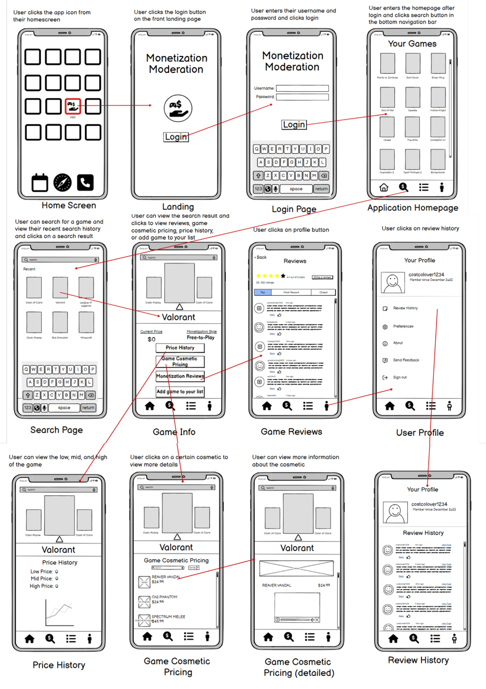

Personas
Personas are fictional characters that, in UX design, stand in for the various user types who might engage with a given product or service.
Personas are built using data and research on user behavior, demographics, and goals, and they are used to guide design choices and make sure
that the product or service caters to the demands of its intended market. Personas frequently contain data like the user's age, gender, location,
level of education, occupation, and other pertinent characteristics that may affect how they utilize the product or service are included in the demographic details.
Information about the user's goals, motivations, and pain points is included in behavioral patterns, as is information about how they generally interact
with similar products or services.


Storyboards
Storyboards in UX design are pictures that show how a user might interact with a certain good or service. The various stages of a user's journey,
from first discovery to ultimate interaction with the product or service, are generally represented by a succession of pictures or images.
Early in the design process, storyboards are frequently used to explore and express concepts for how a product or service might operate as well
as to pinpoint potential problems or places for development. They can also be used to present designs to users for input so that they can be tested and improved.


Work Activity Affinity Diagram
A work activity affinity diagram is a visual tool used in UX design to organize and group user activities and tasks based on their similarities
and relationships. It is a method of identifying patterns and insights from user observations or interviews and helps in identifying patterns and
relationships between the different activities.


Wireframes
Wireframes are visual representations of the layout and structure of a website, app, or software application. They are typically created early in the
design process and provide a simple, low-fidelity representation of the user interface. Wireframes are created to communicate the overall layout, navigation,
and functionality of a product without getting into the details of the visual design. They help designers and stakeholders to understand the content and
structure of a product, and to test the usability and functionality of the interface. Wireframes can be created using a variety of tools, from pen and paper
to specialized software programs. They typically include basic elements such as navigation menus, buttons, text fields, and placeholders for images or other
content. They may also include annotations or notes to explain the purpose or functionality of each element.

